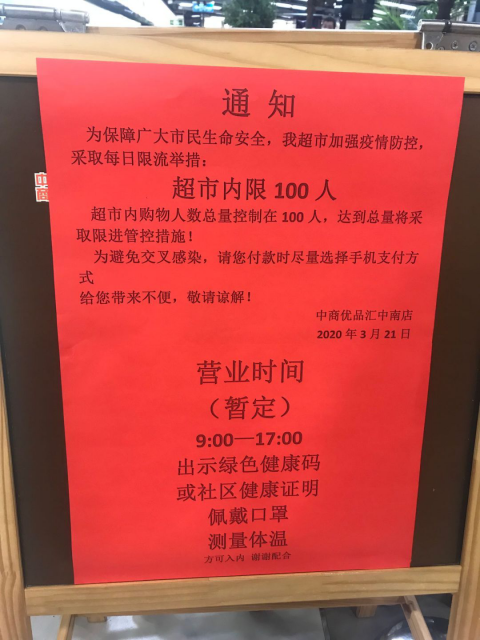
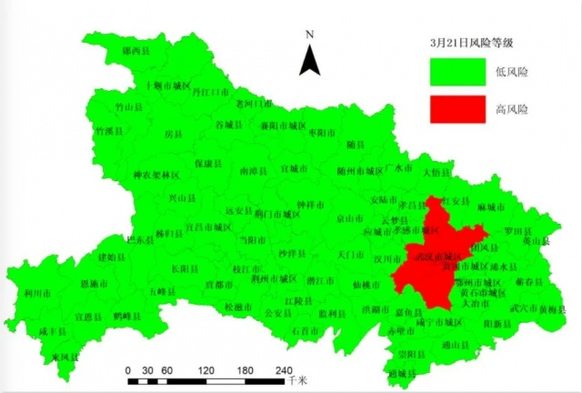
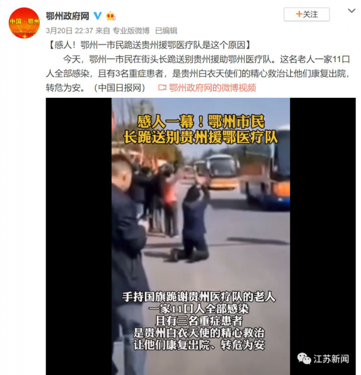

广州公布境外输入关联病例详情：系土耳其输入病例密切接触者
原文链接 备份链接 “ 3月21日0—24时，31个省（自治区、直辖市）和新疆生产建设兵团报告新增确诊病例46例，其中45例为境外输入病例，唯一一例本土新增病例来自广东省，系首例境外输入关联病例。 ” 3月21日0—24时，31个省（自治 …
叶青武汉日记：万邦一心，众志成城
 5348
5348
来源：正和岛
作者：叶青
03-22正在打榜，当前第2

[
华商韬略

华商韬略（北京）文化传媒有限公司 媒体
](https://archive.ph/o/3JDTT/mp.zhisland.com/wmp/user/personal/other/home?uid=6564052652093603844)
推荐人

1、4天零新增
21日，周六，晴。21日，全国大陆新增确诊病例46例，新增死亡病例6例（湖北5例），新增疑似病例45例。截至21日，全国大陆现有确诊病例5549例（其中重症病例1845例），累计治愈出院病例72244例，累计死亡病例3261例，累计报告确诊病例81054例，现有疑似病例118例。湖北新增确诊病例0例（武汉0例），新增治愈出院病例490例（武汉463例），新增死亡病例5例（武汉4例），现有确诊病例5224例（武汉5143例），其中重症病例1812例（武汉1794例）。累计治愈出院病例59432例（武汉42354例），累计死亡病例3144例（武汉2508例），累计确诊病例67800例（武汉50005例）。新增疑似病例0例（武汉0例），现有疑似病例0例（武汉0例）。21日，新增报告境外输入确诊病例45例（上海14例，北京13例，广东7例，福建4例，江苏2例，河北、浙江、江西、山东和四川各1例）。截至21日，累计报告境外输入确诊病例314例。上海报告的14例境外输入性新冠肺炎确诊病例中，有7名留英学生、3名在美旅行游客。不是小数字。关于什么是“45+1”？大家尤为关心。这个“1”在广州。截至21日广东新增确诊病例8例，其中深圳3例（英国、泰国、西班牙输入各1例）、广州3例（菲律宾、土耳其各输入1例，境外输入关联病例1例）、湛江1例（法国输入）、珠海1例（英国输入）。所谓境外输入关联病例，即金某为土耳其输入确诊病例林某（的密切接触者，属境外输入关联病例。截至欧洲中部时间20日23时59分（北京时间21日6时59分），全球新冠肺炎确诊病例266073例，死亡病例11184例，疫情已扩散至182个国家和地区。目前中国以外确诊病例最多的是意大利，达到47021例。此外，西班牙、伊朗、德国、美国、法国的确诊病例均已超过1万例。
2、进超市有三道关
19日，武汉市新冠肺炎疫情防控指挥部社区疫情防控组和市场供应保障与外事组联合发布《关于在全市有序开放居民生活物资供应商业网点的通知》。21日上午，本地记者兵分6路，探访中心城区恢复营业的商业网点看到，个人进店购物前需完成实名登记、出示健康码、测量体温三道程序，店内客流平稳，商品齐全，市民喜欢的豆制品、热干面纷纷上架。这从封闭超市，到有限制开放超市，是武汉保卫战成功的重要标志。

这几天，武汉有108人接种新冠疫苗。他们也是英雄。I期试验需要的志愿者并不多，仅限武汉地区常住居民，武昌、洪山、东湖风景区户籍居民优先，年龄18-60周岁。志愿者会被分为低剂量组、中剂量组和高剂量组三组，每组36人。此后的14天，为集中隔离观察期。历史同样会记住他们。海峰（化名）说，自己是当天年纪最大的志愿者。作为一个男人，或多或少还是有点家国情怀。“能给国家和社会提供一点力所能及（的帮助），（发挥）微不足道的作用，此生无憾。”21日，网络上最热闹的事情，就是网传湖北一位主流媒体记者的亲身经历《我最难忘的一天》一文披露，“武汉有新增确诊病例”。全国各地的网友都关注。对此，武汉市卫健委官网在22日凌晨发文回应称“情况不实”：20日，网传汉阳区玫瑰西园社区告示“116单元有两例新冠确诊病人，对此单元进行封闭。”经查，玫瑰西园116单元一例患者为3月6日确诊病例，现住院治疗；另一例为3月11日阳性检测病例，现在康复驿站隔离康复。两人均不属于新增确诊病例。20日下午，网传韩家墩街综合社区关于“昨晚丽水康城小区又有新增病例”的“重要通知”。经查，小区居民张某某为无症状感染者，根据《国家卫健委办公厅关于印发新型冠状病毒肺炎防控方案（第六版）的通知》，非确诊病例。19日，有网民在微信群散布昨日同济医院新增100多例新冠肺炎确诊病例，经向同济医院和硚口区新冠肺炎防控指挥部了解核实，同济医院所有新冠核酸检测阳性病例都依法依规进行网络直报，同济医院本部、光谷院区、中法新城院区近日均没有新冠肺炎确诊病例。鹰台社区一婆婆刘某某在人民医院就诊情况。经查，刘某某曾因新冠肺炎入住省人民医院光谷院区治愈后出院，17日凌晨2时许，刘某某出现咳嗽、呼吸困难等症状，由其女联系120送至省人民医院本部就诊，医院为其做了CT检查。当晚18时许，省人民医院将其收治到该院光谷院区，19时许，刘的核酸检测结果为阴性。19日，医院再次对其核酸检测，仍为阴性，目前刘在院治疗。
3、湖北经济的重启恢复
关于全国的经济损失，1-2月规上工业增加值下降13.5%，已经能够说明问题。那么湖北的数字呢？20日，湖北省经济和信息化厅副厅长吴方军表示，1至2月全省规模以上工业增加值同比下降46.2％。汽车、电子、石化等重点行业，下降幅度均在40％以上。如何恢复经济秩序？湖北省将开展4项工作：一是狠抓帮扶服务，让重点产业动起来。组建工作服务专班，加快重点企业产业链的复工复产。二是狠抓技术改造，让传统产业强起来。加快企业智能化、网络化、绿色化改造。三是狠抓新业态。积极培育新型消费，促进5g场景应用，在线教育、在线办公，区块人工智能、大数据等新产业。四是狠抓项目投资。21日下午，我省在汉召开统筹推进全省疫情防控和经济社会发展工作座谈会，应勇书记强调，要坚持“防控为先、统筹为要、科学精准、稳妥善后”的原则，推动疫情防控从“全面阻击”向“精准防控”转变，经济社会发展从“按住暂停”向“重启恢复”转变。为此，省发改委和建行湖北省分行设立1200亿元综合融资专项资金，有力支持复工复产和经济恢复发展。全省的规上工业复工率前几天就超过50%。武汉要慢一些。武汉已有6家企业部分复工复产，返岗复工人员31781人。市国资委系统统筹协调34家市属国有企业，一方面强化防疫责任，防输入，控扩散，莫厌战；另一方面积极为企业争取政策支持，谋开工，争复产，当英雄。3月3日至19日，市国资委主要负责人先后走访调研了航发集团、武建集团、城投集团、二零四九集团、农业集团，了解疫情对企业生产经营造成的影响，鼓励企业持之以恒抓好各项防疫工作措施落实。城投集团、商贸控股等企业反映，部分外地员工特别是外用工面临返汉困难。此外，由于设备长时间运行，部分设备维修配件及维修厂家在省外，设备配件供应周期长及协助维修人员来汉、返回困难。21日，公交一公司为复工作准备，对车辆进行全面消杀，将实名登记乘车的二维码标牌贴在上车处。可喜的是，武汉市内过江桥梁通道上的防疫测温检测点均已撤除，所有车道恢复正常通行。长江公铁隧道及长江隧道仍处于暂时封闭状态。截至21日24时，全省低风险市县75个，高风险市县1个，无中风险市县。

武汉什么时候成为低风险地区？风险划定标准：即以县市区为单位，无确诊病例或连续14天无新增确诊病例为低风险地区；14天内有新增确诊病例，累计确诊病例不超过50例，或累计确诊病例超过50例，14天内未发生聚集性疫情为中风险地区；累计确诊病例超过50例，14天内有聚集性疫情发生为高风险地区。期待武汉成为中风险、低风险地区。与此同时，截至20日，湖北省已有约12万名务工人员离鄂，顺利返岗。但是，要去北京上海还是不容易的。他们也很难。
4、援鄂医疗队的三个动人故事
20日，贵州援鄂医疗队员离鄂返黔的路上，鄂州市民纷纷赶来送行。令人震惊的一幕发生了：一位男子手握国旗跪地，不断向医疗队员作揖感谢。这一幕让很多人泪奔。当时有记者正跟车采访，回忆：车上的医务人员纷纷起立、鞠躬，给这位男子回礼。为什么男子要跪在街头？这名跪谢医疗队的男子，一家11口人全部感染，且有3名重症患者，是白衣天使们的精心救治，让他们康复出院。

20日，湖北医生吴丹在送别四川医疗队队员时，认出了自己的大学同学孙颖。在此之前，她们在方舱医院奋斗了40天，彼此却都不知道对方的存在。俩人在叙旧时笑着笑着却都哭了，现场十分感人。这种同学会绝无仅有。21日，圆满完成支援黄冈任务的576名山东医疗队队员们安全到达济南。医疗队员杜庆给孩子买了来自黄冈的纪念品——《黄冈密卷》。21日晚，杜庆的儿子看到了爸爸带回礼物的视频。妈妈：“什么感想？”儿子：“我以后会努力学习，做一个对社会有用的人……”灾难是最好的老师。建议黄冈给每个医生送一套黄冈密卷。2月26日，江苏省盐城市捐赠给大冶、阳新4条口罩生产线。生产线凝聚着江苏的关爱，半自动口罩机、超声波点焊机、熔喷过滤布、无纺布等材料都是盐城市捐赠的，负责出具检测报告的浙江省轻工业品质量检测研究院免收检测费。3月7日，位于阳新县的美顺和医学科技有限公司口罩生产线开始试生产。3月11日，大冶百世吉有限公司的口罩生产车间24小时两班倒不停歇生产，峰值时产能可以达到一天5万片。大冶、阳新两地目前生产的均为普通民用（劳保）口罩。美顺和公司已订购8条生产全自动口罩生产线，获批相关资质后，拟生产医用口罩。这就是输血之后的造血。湖北省的医护用品生产能力如何？湖北省经济和信息化厅副厅长吴方军表示，经过两个多月努力，湖北省内医用防护服日产13万套，N95口罩日产32万只以上，医用外科口罩日产350万只。加上中央调拨、外省支援、社会捐助和全国支持，湖北实现了医用防护物资从紧缺到富余的逆转。下一步，湖北将助推医用防护产业加快发展。捐赠救护车的故事并没有中断。3月15日，志愿者团队先后为武汉672医院、湖北省肿瘤医院、武汉市汉阳医院、孝感市孝南区肖港中心医院、洪湖市燕窝镇中心卫生院、黄冈中心医院、红安县苏区医院，找到了急需的负压救护车。同时，英山县人民医院的募集资金进行也即将到位。目前募集行动还在继续。这个团队志愿者为来自中南财经政法大学、华中科技大学、上海交通大学、中欧工商学院等高校校友以及全国爱心人士和一些企业家等。
5、有机会就说是我的习惯
21日14点15分，财新网发文《湖北省统计局副局长叶青：官僚主义和病毒一样会杀人》，引起了网络的小小轰动。很多2003年以来采访过我的记者与我联系。财新记者采访了我三次，花了三个小时。有一位朋友这样说：我最欣赏，叶青同志留20%权力的血性。这可能是许多够得共产党员称号的人：在立党为公方面，该真学习的地方。叶青同志，是亦是中国舆论领城里，认识比较清醒的干部。另，为什么他，真被人说着了：在仕途上就被冷冻了，(一冻就是十七年)他自己说：这对他，更好！这可以理解他：虚怀若谷。但他的“公车改革”的建议，是可以载入国家的档案里的，它的价值是会传颂百年或超百年的。此“公车上书”真被我们更广泛地推广，深入运用下去，达到触此傍通、由表及里，真彰显其蕴含的意义，我们党内存在着的有数量的形式主义、官僚主义可能会少许多。党内形式主义，官僚主义是党内腐败的温床，它对中国社会经济发展，对党应该得到更力健康发展，无疑不是起着具有破坏作用的，该动用《监察法》对之去依法进行监督。正如叶青哪句话：和病毒一样，该动用党的健康肌体与人民力量，去把它们像“瘟疫”一样绞杀掉，否则它亦是“会杀人”的。我现在不是全国人大代表，但是终身是代表。终身以代表方式说话。
6、万邦一心，众志成城
自3月11日世卫组织宣布疫情已具有大流行特征以来，累计境外输入病例从85例增长到269例，增幅为216%，快于同期全球累计确诊病例98%的增幅。中国的封堵境外输入方面做出了更大的努力。21日19时30分，中国援助塞尔维亚的6人专家医疗队抵达塞尔维亚贝尔格莱德尼古拉特斯拉国际机场，随着专机带来的有中国政府紧急筹集的十几吨的呼吸机、口罩、试剂盒等防疫物资。塞尔维亚总统武契奇、卫生部长、国防部长等多位政府官员在停机坪等候。这是很高的规格。武契奇在五星红旗上献上了他深情的一吻，这一幕使得现场很多人动容。近日，巴西参议长阿尔科伦布雷、众议长马亚代表巴西国会就联邦众议员爱德华多辱华言论向中国政府和人民致歉，批评爱德华多的不当言辞同巴中全面战略伙伴关系的重要性相悖，重申巴方珍视巴中两国间的兄弟情谊，希望双方建立更深厚的友好合作关系。这种道歉是必要的。在关键时刻，中国常说：万众一心，众志成城。在此时此刻，我们要建议：万邦一心，众志成城，才能取得世界保卫战的胜利。
7、小结
四天连续是零。终于可以到超市了。从封超市到开超市，走过了最艰苦的时光。
中国国旗是一种骄傲。

[
以上文章内容，不代表正和岛平台观点
内容授权、投诉请联系neirong@zhisland.com
 举报内容
举报内容
](#)[](#)

原文链接 备份链接 “ 3月21日0—24时，31个省（自治区、直辖市）和新疆生产建设兵团报告新增确诊病例46例，其中45例为境外输入病例，唯一一例本土新增病例来自广东省，系首例境外输入关联病例。 ” 3月21日0—24时，31个省（自治 …
原文链接 备份链接 叶青武汉日记：帮助武汉的另外一群人——外省护工 5280 来源：正和岛 作者：叶青 03-21正在打榜，当前第2 [ 中国企业家杂志 - - …
原文链接 备份链接 武汉疫情防控持续保持严格措施，疫情形势出现一些积极变化，但近日武汉每天仍有新增确诊病例数百人。这些新增确诊病例主要从哪里来？“新华视点”记者进行了追踪。 80%-90%来自疑似病例 有些隔离点密接人群确诊比例高于5% …
原文链接 备份链接 图片来源：视觉中国 作者：秦交锋、廖君、刘宏宇 本文来源：新华网 “ 武汉疫情防控持续保持严格措施，疫情形势出现一些积极变化，但近日武汉每天仍有新增确诊病例数百人。这些新增确诊病例主要从哪里来？“新华视点”记者进行了追 …
原文链接 备份链接 澎湃新闻记者 张家然 2月22日下午，国务院应对新型冠状病毒感染肺炎疫情联防联控机制举行新闻发布会，介绍保障生活必需品市场供应和流通工作情况。 国家卫生健康委新闻发言人米锋介绍说，从数据可以看出，武汉、湖北其他地市，全 …